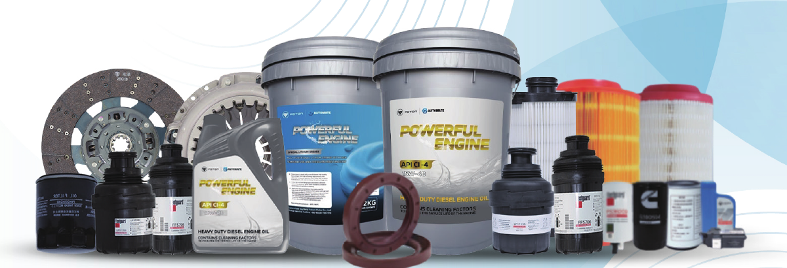
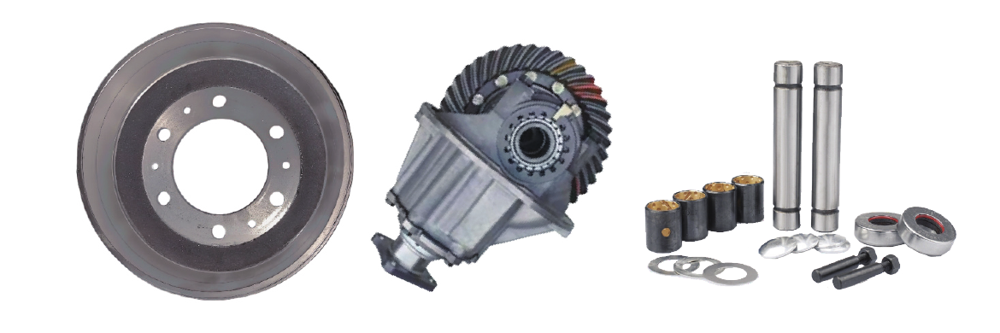
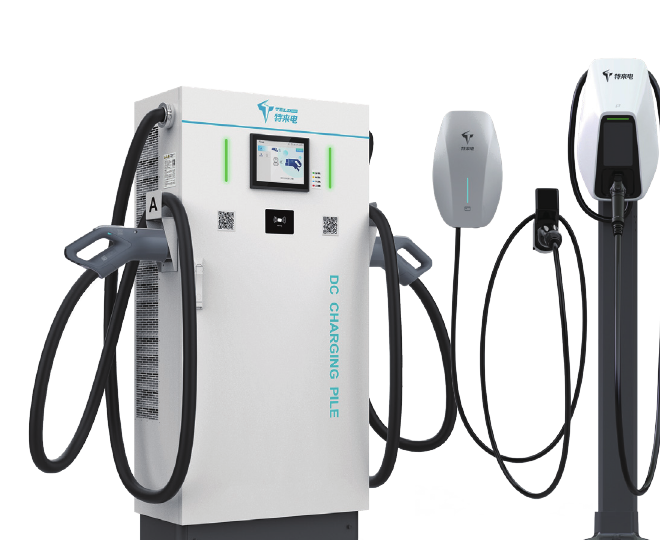

更具竞争力
整合后市场资源，价格较原厂件低 20% 以上。

6 大产品类别
01 / BRAND
AUTOMATE 配件品牌始于 2016 年末，是福田汽车旗下第二大配件品牌。品牌面向非保修市场，在品质、适配与成本之间取得务实平衡，同时响应不同客户的个性化需求。
整合后市场资源，价格较原厂件低 20% 以上。
与福田品牌其他产品享有同等的质量保证。
覆盖主流商用车系统与多样化使用场景。
02 / PORTFOLIO
从日常保养到系统维修，再到新能源补能设备，六大类别满足多场景需求。
1,000+ SKU
涵盖油品、冷却液、养护品、滤芯与尿素等日常保养产品。

03 / ENGINEERED VALUE
甄选成熟供应体系与可靠材料，围绕耐久、稳定和安全进行产品设计。
面向商用车常见系统与车型，提供清晰的零件编码和适用范围。
从燃油车关键系统到 40-480 kW 充电设备，持续扩展服务边界。
04 / NEW ENERGY
新能源产品覆盖充电桩、随车充与仪表等设备。智能运维、液冷控制与多重安全防护，让运营更高效、更可靠。
